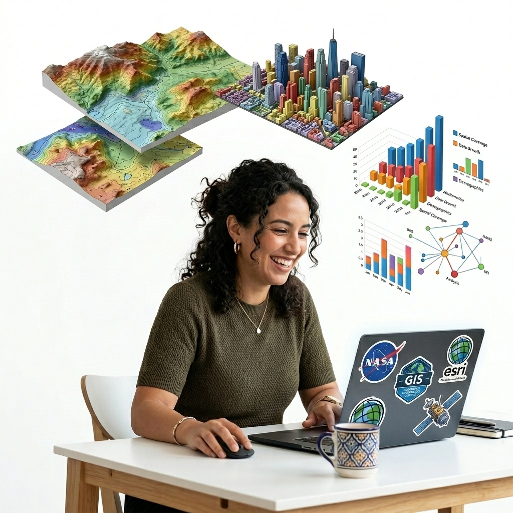

AntigravityGIS by Sounny brings natural-language spatial intelligence directly into your ArcGIS Pro Geoprocessing pane and QGIS interface. Inspect dataset schemas, audit spatial references, execute ArcPy/PyQGIS tools, and automate GIS workflows, running off your active Google Antigravity Account.

Only supported on Windows Devices.
ArcPy Geoprocessing Pane AI Copilot extension. Automated Python environment setup & toolbox deployment for Windows.
Native PyQGIS Plugin & Python SDK harness. Automatic dependency configuration and plugin folder deployment for Windows.
Clean ArcPy agent execution directly in your Geoprocessing pane.
# ArcGIS Pro AI Copilot Execution in Geoprocessing Pane import arcpy from agent_core import GISAntigravityAgent # Initialize AntigravityGIS Agent on your active Google Antigravity account agent = GISAntigravityAgent() # Natural Language Instruction in ArcGIS Pro prompt = "Inspect feature classes in target.gdb and buffer streams by 50 meters." response = await agent.execute_prompt(prompt) arcpy.AddMessage(response)
Decoupled Python core architecture connecting Google Antigravity AI agents to Esri ArcPy and QGIS PyQGIS.
Inspect File Geodatabases, feature class field definitions, spatial reference coordinate systems, and bounding box extents automatically inside ArcGIS Pro.
Runs on your active Google Antigravity account (agy auth login) and Python SDK for real-time streaming reasoning and tool execution.
Automated PowerShell & Batch scripts configure dependencies and deploy toolboxes and plugins directly to ArcGIS Pro and QGIS profiles.
Audits geometry types, feature record counts, missing spatial projections, and spatial attribute tables prior to map rendering or publishing.
Includes package_addon.py to assemble the extension into distributable release zip files with zero third-party compile dependencies.
Integrated Qt DockWidget Copilot in QGIS Desktop. Real-time active layer schema inspection, spatial CRS projection checks, and automated PyQGIS/GDAL geoprocessing.
Spatial queries are processed by Google Antigravity. Be cautious when processing sensitive, confidential, or proprietary GIS datasets, and always verify AI-generated spatial outputs before production deployment.
Deploy AntigravityGIS on Windows in 2 simple steps for either desktop platform.
When downloading .zip packages from the web, Windows attaches an internet security flag. To unblock: Right-click the downloaded .zip file → Properties → check "Unblock" → click OK before extracting.
Download the ArcGIS package, extract it, and double-click Install-AntigravityGIS.bat (or right-click Install-AntigravityGIS.ps1 → Run with PowerShell).
Install-AntigravityGIS.bat
View → Catalog Pane).%APPDATA%\Esri\ArcGISPro\ArcToolbox\MyToolboxes\AntigravityGIS\AntigravityGIS.pyt.Download the QGIS package, extract it, and double-click Install-AntigravityGIS-QGIS.bat (or right-click Install-AntigravityGIS-QGIS.ps1 → Run with PowerShell).
Install-AntigravityGIS-QGIS.bat
Designed by Moulay Anwar Sounny-Slitine, PhD to bridge modern agentic AI models with desktop GIS software. AntigravityGIS empowers spatial analysts, GIS engineers, and cartographers with natural language spatial copiloting inside Esri ArcGIS Pro and QGIS.